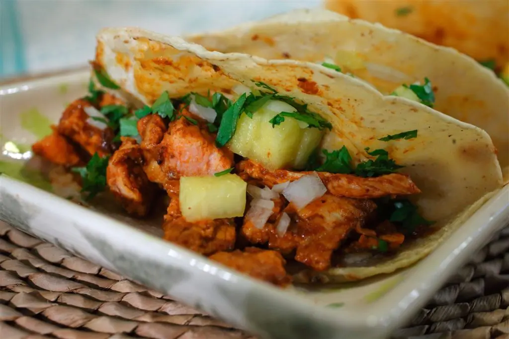

Tacos al pastor
Volver a recetas
Ingredientes
- Carne de cerdo
- Cebolla
- Cilantro
- Cebolla picada
- Chiles Guajillo
- Chiles pasilla
- Tomates
- Ajo
- Piña
- Achiote
Preparación
- Preparamos el adobo. Para ello, hervimos los jitomates durante 5 minutos. Licuamos con chiles pasilla y guajillo desvenados, achiote y un trozo de cebolla.
- Tomamos la carne de cerdo cortado en fetas y dejamos marinando con el adobo durante 3 horas en frío. Sofreímos en una sartén con aceite. Cortamos la carne. Armamos los tacos con tortillas pasadas por agua para recuperar la humedad. Por último, agregamos la piña, el cilantro y la cebolla cortada.
Tu resultado final debe verse así
